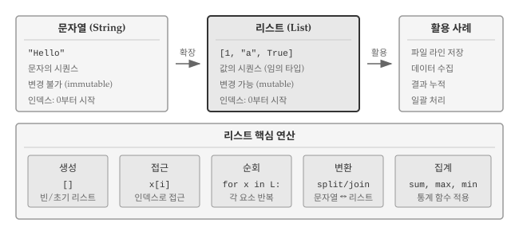
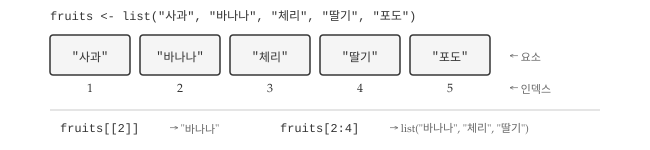
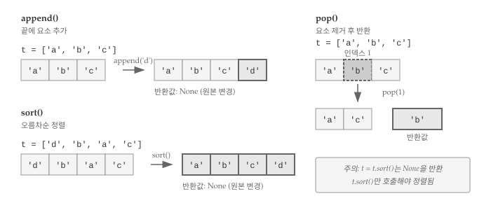
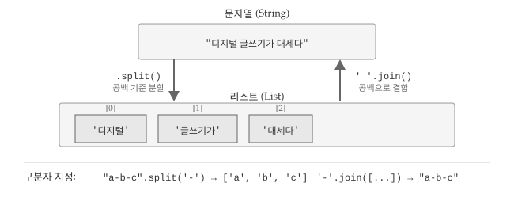
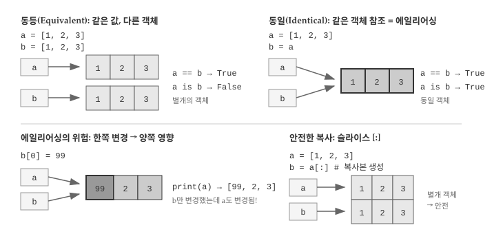
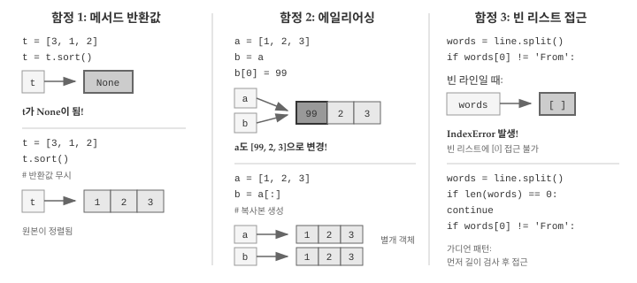

[10, 20, 30, 40]
['crunchy frog', 'ram bladder', 'lark vomit']
['고양이', '호랑이', '사자']9 리스트
앞 장에서 파일을 읽으면 각 줄이 문자열로 반환된다는 것을 배웠다. 그런데 수천 줄짜리 파일을 읽으면 수천 개의 문자열이 생긴다. 개별 변수로 관리할 수는 없다. 여러 값을 하나로 묶어 관리하는 도구가 필요하다.
리스트(list)는 여러 값을 순서대로 담는 컬렉션이다. 파일을 읽으면 각 줄이 리스트의 요소가 된다. 사용자 입력, 웹에서 가져온 데이터, 계산 결과 등 “여러 개”를 다룰 때 리스트가 등장한다. 리스트 개념과 조작 방법을 이해하면, AI에게 “리스트에서 조건에 맞는 요소만 필터링해줘”, “각 요소에 함수를 적용해줘”처럼 명확한 요청을 전달할 수 있다.

그림 9.1 는 리스트의 전체 구조를 보여준다. 문자열이 문자만 담는 불변(immutable) 시퀀스라면, 리스트는 정수, 문자열, 불리언 등 임의 자료형을 담을 수 있는 가변(mutable) 시퀀스다. 파일에서 읽은 라인을 저장하거나, 사용자 입력을 수집하거나, 계산 결과를 누적할 때 리스트가 자연스럽게 등장한다. 핵심 연산은 다섯 가지로 요약된다. 대괄호 []로 빈 리스트를 생성하고, x[i] 형식으로 특정 위치에 접근하며, for x in L: 구문으로 전체를 순회한다. split()과 join()으로 문자열과 리스트를 상호 변환하고, sum(), max(), min() 같은 집계 함수로 통계값을 산출한다.
9.1 리스트 기초
리스트는 문자열과 마찬가지로 값의 시퀀스(sequence)다. 문자열이 문자의 나열이라면, 리스트는 임의 자료형을 담을 수 있는 값의 나열이다. 리스트에 담긴 각 값을 요소(element) 또는 항목(item)이라 부른다.
리스트를 생성하는 가장 간단한 방법은 대괄호 []로 요소를 감싸는 것이다.
정수 4개로 이루어진 리스트, 영문 문자열 리스트, 한글 문자열 리스트를 차례로 보여준다. 리스트 요소가 반드시 같은 자료형일 필요는 없다. 문자열, 부동 소수점 숫자, 정수, 심지어 또 다른 리스트까지 한 리스트 안에 섞어 담을 수 있다.
['spam', 2.0, 5, [10, 20]]리스트 안에 또 다른 리스트가 들어가면 중첩(nested) 리스트라 부른다. 요소가 하나도 없는 리스트는 빈 리스트(empty list)이며, []로 만든다. 리스트도 다른 자료형처럼 변수에 대입할 수 있다.
cheeses = ['체다', '브리', '까망베르']
numbers = [17, 123]
empty = []
print(cheeses, numbers, empty)
#> ['체다', '브리', '까망베르'] [17, 123] []9.1.1 인덱스와 변경
리스트 요소 접근법은 문자열과 같다. 꺾쇠 괄호 [] 안에 인덱스를 넣으면 해당 위치의 요소를 가져온다. 파이썬 인덱스는 0부터 시작한다.

cheeses[0]
#> '체다'문자열과 달리, 리스트는 변경 가능(mutable)하다. 꺾쇠 괄호 연산자가 대입문 왼쪽에 오면 해당 위치의 요소를 새 값으로 교체한다.
numbers = [17, 123]
numbers[1] = 5
print(numbers)
#> [17, 5]리스트 인덱스 규칙은 문자열과 같다. 정수 표현식을 인덱스로 쓸 수 있고, 범위를 벗어나면 IndexError가 발생한다. 음수 인덱스는 끝에서부터 역순으로 센다.
in 연산자로 특정 값이 리스트에 포함되어 있는지 확인할 수 있다.
cheeses = ['체다', '브리', '까망베르']
'체다' in cheeses
#> True
'고르곤졸라' in cheeses
#> False9.1.2 리스트 순회
리스트의 진가는 순회(traversal)에서 드러난다. 수백, 수천 개의 요소를 일일이 변수로 다루는 대신, for 문 하나로 전체를 훑으며 처리할 수 있다. 파일의 각 줄을 읽어 특정 패턴을 찾거나, 숫자 리스트에서 합계를 구하거나, 조건에 맞는 요소만 골라내는 작업이 모두 순회로 시작된다.
for cheese in cheeses:
print(cheese)요소를 읽기만 한다면 위 방식이면 충분하다. 요소 값을 직접 바꾸려면 인덱스가 필요하므로 range(len()) 패턴을 사용한다.
numbers = [1, 2, 3, 4, 5]
for i in range(len(numbers)):
numbers[i] = numbers[i] * 2
print("결과:", numbers[i])
#> 결과: 2
#> 결과: 4
#> 결과: 6
#> 결과: 8
#> 결과: 10range(len(numbers))는 0부터 리스트 길이 직전까지 인덱스를 생성한다. 루프 안에서 i로 요소에 접근해 값을 읽고 갱신할 수 있다. 빈 리스트라면 for 문 본문이 한 번도 실행되지 않는다.
for x in []:
print('이런 일은 절대 발생하지 않는다.')리스트가 다른 리스트를 담을 수 있다. 중첩된 리스트라도 요소 하나로 취급되므로 다음 리스트의 길이는 4다.
['spam', 1, ['브리', '체다', '까망베르'], [1, 2, 3]]9.2 리스트 연산
문자열에서 +로 문자열을 이어 붙이고 *로 반복했던 것처럼, 리스트에도 동일한 연산자가 작동한다. 두 리스트를 합치거나, 같은 패턴을 여러 번 반복하거나, 일부분만 잘라내는 작업이 리스트 연산의 핵심이다. 결합, 반복, 슬라이싱 세 가지를 차례로 살펴보자. + 연산자는 두 리스트를 이어 붙인다.
a = [1, 2, 3]
b = [4, 5, 6]
c = a + b
print(c)
#> [1, 2, 3, 4, 5, 6]* 연산자는 리스트를 지정 횟수만큼 반복한다.
[0] * 4
#> [0, 0, 0, 0]
[1, 2, 3] * 3
#> [1, 2, 3, 1, 2, 3, 1, 2, 3]9.2.1 슬라이싱
리스트에서 연속된 여러 요소를 한꺼번에 다루어야 할 때가 있다. 처음 세 개만 꺼내거나, 중간 부분만 잘라내거나, 전체를 복사하는 경우다. 슬라이스(slice) 연산자는 인덱스 범위를 지정해 리스트의 일부분을 추출한다. 문자열 슬라이싱과 문법이 같으므로 익숙할 것이다.
t = ['a', 'b', 'c', 'd', 'e', 'f']
t[1:3]
#> ['b', 'c']
t[:4]
#> ['a', 'b', 'c', 'd']
t[3:]
#> ['d', 'e', 'f']
t[:]
#> ['a', 'b', 'c', 'd', 'e', 'f']1:3은 인덱스 1부터 2까지(3 미포함) 요소를 추출한다. [:]는 전체 리스트를 복사한다. 리스트는 변경 가능하므로 원본을 보존하려면 복사본을 만들어두는 편이 안전하다. 대입문 왼쪽에 슬라이스를 두면 여러 요소를 한꺼번에 바꿀 수 있다.
t = ['a', 'b', 'c', 'd', 'e', 'f']
t[1:3] = [1, 2]
print(t)
#> ['a', 1, 2, 'd', 'e', 'f']9.3 리스트 조작
파이썬은 리스트를 조작하는 여러 메서드를 제공한다. 그림 9.3 에서 보듯이 append()는 요소 추가, sort()는 정렬, pop()은 요소 제거와 반환을 담당한다. sort()와 append()는 원본을 직접 변경하고 None을 반환하므로 주의가 필요하다.

append() 메서드는 리스트 끝에 요소를 추가한다.
t = ['a', 'b', 'c']
t.append('d')
print(t)
#> ['a', 'b', 'c', 'd']sort() 메서드는 리스트를 오름차순으로 정렬한다. 원본이 직접 바뀐다는 점을 기억하자.
t = ['d', 'c', 'e', 'b', 'a']
t.sort()
print(t)
#> ['a', 'b', 'c', 'd', 'e']9.3.1 요소 삭제
리스트에 요소를 추가하는 만큼, 제거하는 일도 자주 발생한다. 더 이상 필요 없는 데이터를 정리하거나, 조건에 맞지 않는 항목을 걸러낼 때 삭제 연산이 필요하다. 파이썬은 상황에 따라 선택할 수 있는 여러 삭제 방법을 제공한다. 인덱스를 알면 pop() 메서드로 해당 요소를 제거하면서 값을 반환받을 수 있다.
t = ['a', 'b', 'c']
x = t.pop(1)
print(t)
#> ['a', 'c']
print(x)
#> bdel 문으로도 인덱스 위치의 요소를 삭제할 수 있다.
t = ['a', 'b', 'c']
del t[1]
print(t)
#> ['a', 'c']값을 기준으로 삭제하려면 remove() 메서드를 쓴다. 일치하는 첫 번째 요소만 제거된다.
t = ['a', 'b', 'c']
t.remove('b')
print(t)
#> ['a', 'c']여러 요소를 한꺼번에 제거하려면 슬라이스와 del 문을 함께 쓴다.
t = ['a', 'b', 'c', 'd', 'e', 'f']
del t[1:5]
print(t)
#> ['a', 'f']9.3.2 리스트와 함수
리스트를 다루다 보면 요소 전체에 대해 합계, 최댓값, 최솟값, 개수 같은 통계를 구해야 할 때가 많다. 직접 루프를 돌며 계산할 수도 있지만, 파이썬 내장 함수를 쓰면 한 줄로 끝난다. sum(), max(), min(), len() 함수가 대표적이다.
nums = [3, 41, 12, 9, 74, 15]
print(len(nums))
#> 6
print(max(nums))
#> 74
print(min(nums))
#> 3
print(sum(nums))
#> 154
print(sum(nums) / len(nums))
#> 25.666666666666668입력에 결측값이나 잘못된 자료형이 섞여 있으면 예상과 다른 결과가 나올 수 있다. 자료형을 미리 점검하는 습관이 필요하다.
sum(), len() 같은 집계 함수가 실전에서 어떻게 쓰이는지 살펴보자. 사용자가 숫자를 여러 개 입력하면 평균을 계산하는 프로그램이다. 먼저 리스트 없이 누적 변수만으로 구현한 방식과, 리스트에 값을 모은 뒤 내장 함수로 처리하는 방식을 비교한다. 두 접근법의 차이를 이해하면 리스트와 집계 함수의 조합이 얼마나 코드를 간결하게 만드는지 체감할 수 있다.
total = 0
count = 0
while True:
inp = input('숫자를 입력하세요: ')
if inp == 'done':
break
value = float(inp)
total += value
count += 1
average = total / count
print('평균:', average)count와 total 변수로 누적 합계를 구하는 방식이다. 리스트를 활용하면 입력값을 모아두었다가 마지막에 내장 함수로 한 번에 처리할 수 있다.
numlist = []
while True:
inp = input('숫자를 입력하세요: ')
if inp == 'done':
break
value = float(inp)
numlist.append(value)
average = sum(numlist) / len(numlist)
print('평균:', average)빈 리스트에 입력값을 누적한 후, sum()과 len()으로 평균을 계산한다.
9.4 리스트와 문자열
문자열은 문자의 시퀀스, 리스트는 값의 시퀀스다. 그림 9.4 은 split()과 join() 메서드로 문자열과 리스트를 오가는 과정을 보여준다. split()은 구분자 기준으로 문자열을 리스트로 쪼개고, join()은 리스트 요소를 하나의 문자열로 이어 붙인다.

문자열을 리스트로 바꾸는 방법은 두 가지다. 문자 하나하나를 요소로 분리하려면 list() 함수를, 단어나 구분자 기준으로 쪼개려면 split() 메서드를 쓴다. 용도가 다르므로 상황에 맞게 선택해야 한다. 먼저 list() 함수부터 살펴보자.
s = 'spam'
t = list(s)
print(t)
#> ['s', 'p', 'a', 'm']문자 하나하나가 아니라 의미 있는 단위로 분리하려면 split() 메서드가 적합하다. 문장을 단어별로 나누거나, CSV 파일의 각 줄을 쉼표로 쪼개는 작업에 split()이 쓰인다. 인자 없이 호출하면 공백(스페이스, 탭, 줄바꿈)을 기준으로 분리하고, 구분자를 직접 지정할 수도 있다.
s = '이제는 디지털 글쓰기가 대세다.'
t = s.split()
print(t)
#> ['이제는', '디지털', '글쓰기가', '대세다.']분할된 리스트에서 인덱스로 특정 단어를 꺼낼 수 있다. 구분자는 공백 외에 하이픈 등 원하는 문자를 지정할 수 있다.
s = 'spam-spam-spam'
delimiter = '-'
print(s.split(delimiter))
#> ['spam', 'spam', 'spam']join() 메서드는 split()의 반대로, 리스트 요소를 하나의 문자열로 합친다.
t = ['이제는', '디지털', '글쓰기가', '대세다.']
delimiter = ' '
print(delimiter.join(t))
#> 이제는 디지털 글쓰기가 대세다.구분자를 공백으로 지정하면 단어 사이에 공백이 삽입된다. 빈 문자열 ''을 구분자로 쓰면 공백 없이 바로 이어 붙인다.
9.4.1 라인 파싱
실제 데이터 처리에서 파일을 그대로 출력하는 경우는 드물다. 대부분 특정 패턴을 찾아 필요한 정보만 추출하는 파싱(parse) 작업이 뒤따른다. split()으로 라인을 단어 리스트로 변환한 뒤, 인덱스로 원하는 위치의 값을 꺼내는 패턴이 핵심이다. 이메일 로그 파일에서 “From”으로 시작하는 라인만 골라 요일을 추출하는 예를 통해 이 패턴을 익혀보자.
From stephen.marquard@uct.ac.zaSatJan 5 09:14:16 2008
위 라인을 split()으로 쪼개면 ['From', 'stephen.marquard@uct.ac.za', 'Sat', 'Jan', '5', ...] 형태의 리스트가 된다. 요일 “Sat”은 인덱스 2에 위치하므로 words[2]로 꺼낼 수 있다. 파일 전체를 순회하면서 조건에 맞는 라인만 골라 파싱하는 코드를 작성해보자.
fhand = open('data/mbox-short.txt')
for line in fhand:
line = line.rstrip()
if not line.startswith('From '):
continue
words = line.split()
print(words[2])조건에 맞지 않는 라인은 continue로 건너뛰고, 조건을 만족하는 라인만 파싱해 원하는 정보를 꺼낸다.
9.5 객체와 참조
리스트를 제대로 다루려면 변수가 값을 “담는” 것이 아니라 객체를 “가리킨다”는 점을 이해해야 한다. 두 변수가 같은 값을 가지는 것(동등, equivalent)과 같은 객체를 가리키는 것(동일, identical)은 다른 개념이다. 문자열처럼 불변 객체에서는 별 문제가 없지만, 리스트처럼 변경 가능한 객체에서는 이러한 차이가 예상치 못한 버그로 이어질 수 있다. 먼저 문자열로 동등과 동일의 차이를 확인해보자.
a = 'banana'
b = 'banana'a와 b 모두 문자열을 참조하지만, 같은 객체인지 다른 객체인지는 확인이 필요하다. is 연산자로 두 변수가 같은 객체를 가리키는지 확인할 수 있다.
a = 'banana'
b = 'banana'
print(a is b)
#> Trueis 연산자는 메모리 상 같은 객체인지 확인한다. 문자열은 불변(immutable)이므로 파이썬은 동일한 문자열을 재사용하기도 한다.
리스트는 상황이 다르다.
a = [1, 2, 3]
b = [1, 2, 3]
print(a is b)
#> False같은 요소를 가진 두 리스트는 동등(equivalent)하지만, 별개의 객체이므로 동일(identical)하지는 않다. 동등성은 ==로, 동일성은 is로 확인한다.
9.5.1 에일리어싱
에일리어싱(aliasing)은 두 개 이상의 변수가 동일한 객체를 참조하는 상황이다. 그림 9.5 은 동등과 동일의 차이, 그리고 에일리어싱의 위험성을 보여준다. b = a로 대입하면 두 변수가 같은 객체를 가리키므로, 한쪽을 변경하면 다른 쪽도 바뀐다.

b = a로 대입하면 두 변수가 같은 객체를 가리킨다.
a = [1, 2, 3]
b = a
print(a is b)
#> True
a = [4, 5, 6]
print(a is b)
#> False변수와 객체 사이의 연결을 참조(reference)라 부른다. 에일리어스된 객체가 변경 가능하면 한쪽에서 바꾼 내용이 다른 쪽에도 반영된다.
a = [1, 2, 3]
b = a
b[0] = 17
print(a)
#> [17, 2, 3]b를 변경했는데 a도 함께 바뀌었다. 같은 객체를 가리키기 때문이다. 변경 가능한 객체를 다룰 때는 에일리어싱에 주의해야 한다.
9.6 디버깅
리스트는 강력하지만 초보자가 빠지기 쉬운 함정이 세 가지 있다. 메서드 반환값 오해, 에일리어싱, 빈 리스트 접근이다. 그림 9.6 는 각 함정의 원인과 해결책을 보여준다.

9.6.1 메서드 반환값 오해
문자열 메서드는 새 문자열을 반환하므로 word = word.strip() 패턴이 자연스럽다. 리스트 메서드는 다르다. sort(), append(), reverse() 같은 메서드는 원본을 직접 변경하고 None을 반환한다. 반환값을 변수에 대입하면 리스트가 아닌 None이 들어간다.
t = [4, 2, 3]
t = t.sort() # 잘못된 패턴: t가 None이 됨
print(t)
#> None올바른 방법은 반환값을 무시하고 메서드만 호출하는 것이다. t.sort()를 실행하면 t 자체가 정렬된다.
9.6.2 에일리어싱 함정
b = a로 리스트를 대입하면 복사가 아니라 같은 객체를 가리키게 된다. 한쪽을 변경하면 다른 쪽도 바뀐다. 원본을 보존하려면 b = a[:] 슬라이스로 복사본을 만들어야 한다.
t = [3, 1, 5, 2]
orig = t[:] # 원본 리스트 복사
t.sort()
print(orig) # 원본 유지
#> [3, 1, 5, 2]
print(t) # 정렬된 리스트
#> [1, 2, 3, 5]9.6.3 빈 리스트 접근
파일을 파싱할 때 빈 라인을 만나면 split() 결과가 빈 리스트가 된다. 빈 리스트에 words[0]으로 접근하면 IndexError가 발생한다. 인덱스로 접근하기 전에 리스트 길이를 먼저 확인하는 가디언 패턴(guardian pattern)으로 이 문제를 방지할 수 있다.
“From”으로 시작하는 라인에서 요일을 추출하는 예제를 다시 살펴보자.
fhand = open('data/mbox-short.txt')
for line in fhand:
words = line.split()
if words[0] != 'From':
continue
print(words[2])간단해 보이지만 빈 라인을 만나면 오류가 발생한다. 원인을 찾으려면 print() 문으로 디버그 출력을 추가해보자.
fhand = open('data/mbox-short.txt')
for line in fhand:
words = line.split()
print('Debug:', words)
if words[0] != 'From':
continue
print(words[2])빈 라인에서 words가 빈 리스트가 되어 words[0] 접근 시 오류가 발생한다. 단어 개수를 먼저 확인하는 가디언 코드를 추가하면 문제가 해결된다.
fhand = open('data/mbox-short.txt')
days = []
for line in fhand:
words = line.split()
if len(words) == 0:
continue
if words[0] != 'From':
continue
days.append(words[2])
# 처음 3개와 마지막 2개만 출력
print(days[:3], '...', days[-2:])
#> ['Sat', 'Fri', 'Fri'] ... ['Thu', 'Thu']len(words) == 0이면 다음 라인으로 건너뛴다. 여러 조건으로 관심 있는 라인만 걸러내는 방식이다. 결과를 리스트에 모아두면 슬라이싱으로 일부만 확인할 수 있어 디버깅에 유용하다. 프로그램을 작성할 때는 “무엇이 잘못될 수 있을까?”를 항상 염두에 두어야 한다.
9.7 AI와 함께하는 리스트 처리
AI에게 리스트 처리 작업을 요청할 때는 입력 구조, 처리 방식, 기대 출력을 명확히 전달해야 한다. “정수 리스트에서 짝수만 추출해줘”보다 “입력: [1, 2, 3, 4, 5], 출력: [2, 4], 빈 리스트면 빈 리스트 반환”처럼 구체적인 예시를 포함하면 정확한 결과를 얻기 쉽다.
리스트 작업은 필터링, 변환, 집계로 나눌 수 있다. 필터링은 조건에 맞는 요소 추출, 변환은 각 요소에 함수 적용, 집계는 sum(), max() 같은 함수로 단일 값을 산출하는 것이다. 순회, 슬라이싱, 리스트 함수 개념을 알고 있으면 AI가 생성한 코드가 맞는지 검증하기 수월하다.
중첩 리스트나 문자열-리스트 변환 같은 복잡한 작업을 요청할 때는 입력과 출력 예시를 반드시 포함하자. “2차원 리스트 [[1,2,3], [4,5,6]]에서 각 행의 합계 [6, 15]를 구해줘”처럼 명세를 구체화하면 AI가 의도를 정확히 파악할 수 있다.
💡 생각해볼 점
리스트는 프로그래밍에서 가장 기본적이면서도 강력한 자료구조다. 파일의 각 줄, 사용자 입력, 계산 결과 등 “여러 개”를 다루는 거의 모든 상황에서 리스트가 등장한다. 리스트를 자유롭게 다룰 수 있다면 데이터 처리의 절반은 해결된 셈이다.
리스트 핵심은 순서와 변경 가능성이다. 인덱스로 특정 위치에 접근하고, 요소를 추가하거나 삭제하며, 전체를 순회할 수 있다. 문자열이 문자의 불변 시퀀스라면, 리스트는 임의 값의 가변 시퀀스다. 가변/불변 차이를 이해하면 에일리어싱 같은 함정도 피할 수 있다.
split()과 join()으로 문자열과 리스트를 자유롭게 오갈 수 있다. 파일을 읽어 라인을 단어로 쪼개고, 필요한 정보를 추출한 후, 다시 문자열로 결합하는 패턴은 데이터 처리에서 끊임없이 반복된다. 본 장에서 다룬 예제들이 그 기본 틀이다.
다음 장에서는 딕셔너리(dictionary)를 배운다. 리스트가 인덱스로 요소에 접근한다면, 딕셔너리는 키(key)로 접근한다. 이메일 주소별 발신 횟수를 세거나, 단어 빈도를 계산하는 등 “대응 관계”가 필요한 상황에서 딕셔너리가 빛을 발한다.